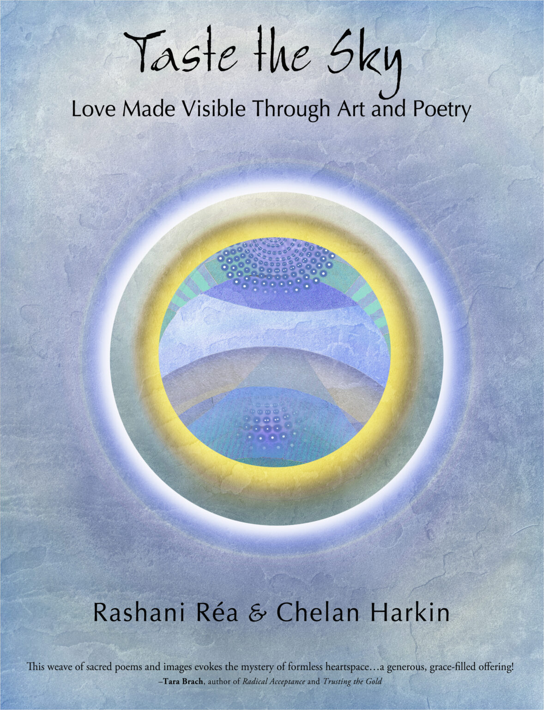
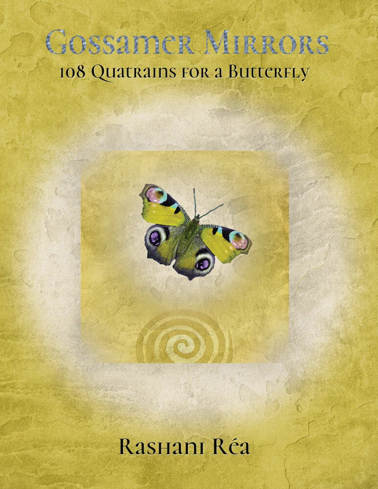
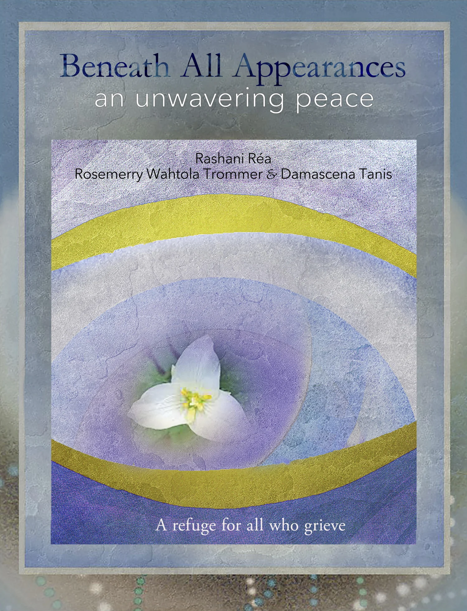
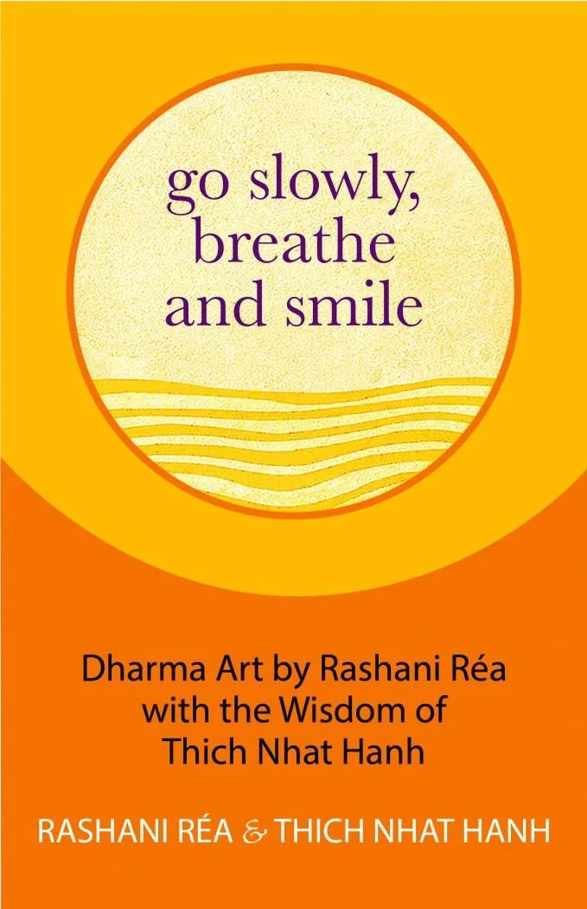
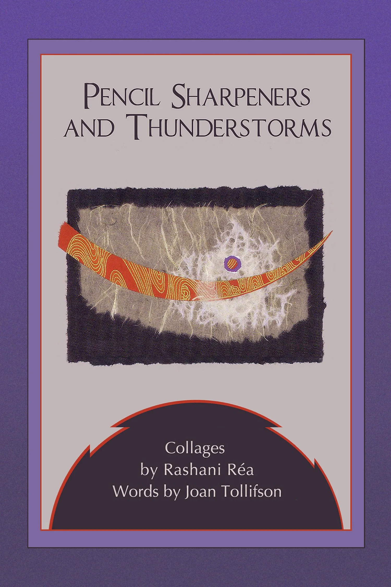
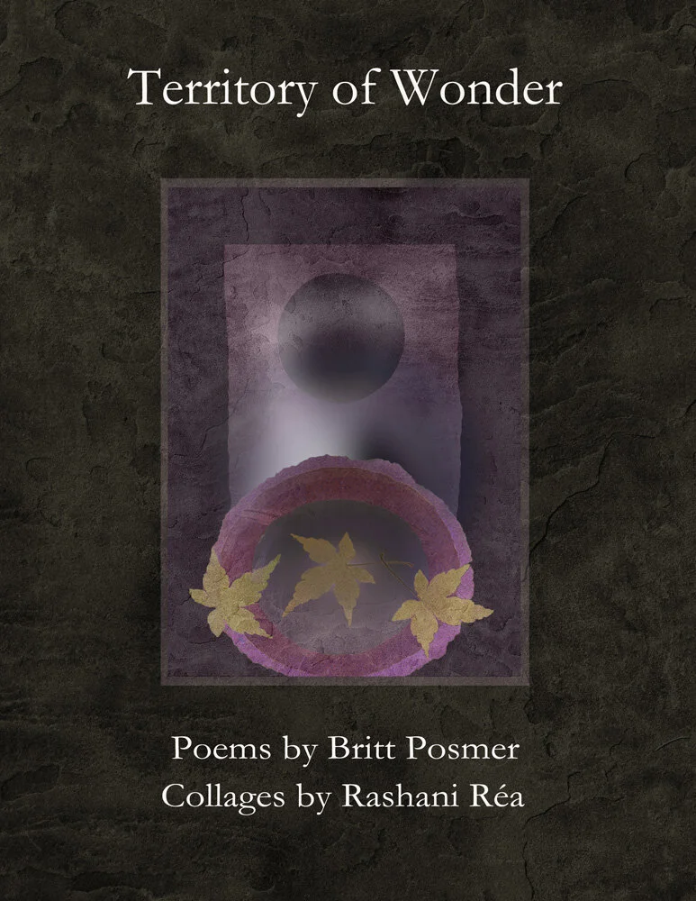
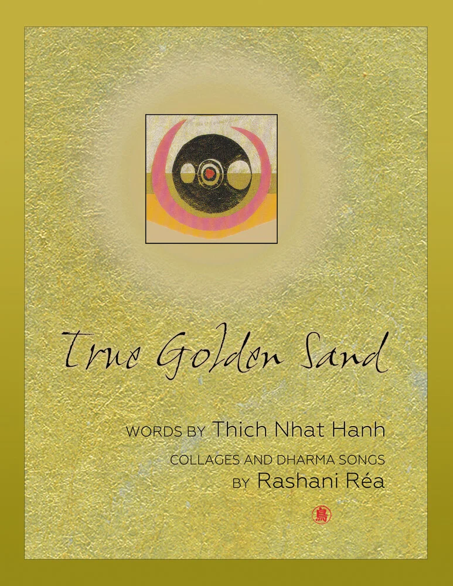
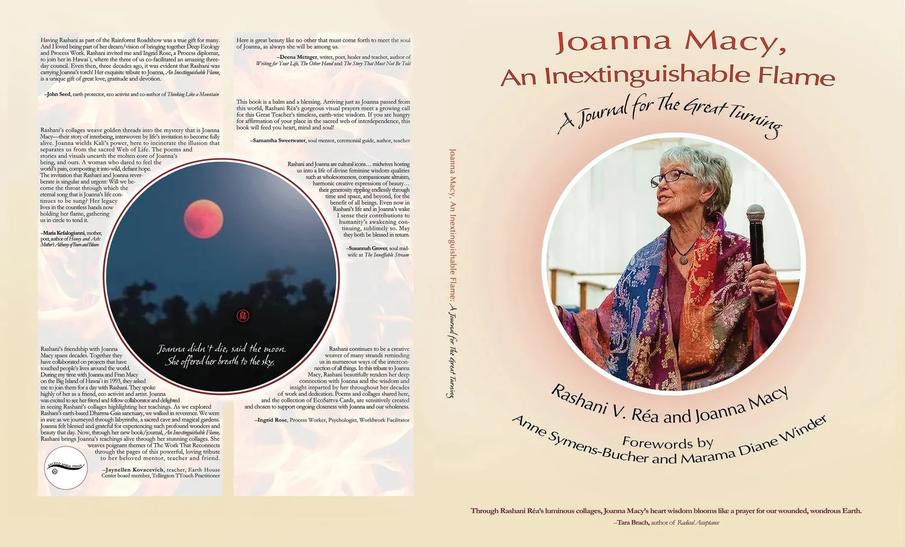

THE WORK / 01A library of
A library of
image & word.
Books, artist collaborations and journals shaped by poetry, contemplative practice, love and loss. Browse a selection of Rashani's published work, then follow through to her original bookstore for the complete archive.
Browse the collection ↓
CURATED BOOKSHELFSelected works, not an exhaustive bibliography
Books to
return to.
Rashani's books span decades and many collaborators. These selections show the diversity of the collection.

BOOK / COLLABORATION
Beneath All Appearances
An Unwavering Peace. Collage, poetry, and the terrain of grief.
Explore publication
BOOK / COLLABORATION
Go Slowly, Breathe and Smile
Dharma art by Rashani with the wisdom of Thich Nhat Hanh.
Explore publication
BOOK / COLLABORATION
Pencil Sharpeners and Thunderstorms
Collages by Rashani; words by Joan Tollifson.
Explore publication
BOOK / COLLABORATION
Territory of Wonder
A collaboration joining Rashani's collage art with poetry by Britt Posmer.
Explore publicationBOOK / COLLABORATION
Gossamer Mirrors
An exploration of love and mystery through poetry and image.
Explore publication
BOOK / COLLABORATION
True Golden Sand
Collages around the words and teachings of Thich Nhat Hanh.
Explore publication
THE JOURNAL RASHANI SHARED
For the
Great Turning.
Joanna Macy, An Inextinguishable Flame places Rashani's artistic practice alongside the legacy and writing of Joanna Macy. It belongs to her expanding collection of reflection journals.
See the journal on AmazonJOURNALS & CLASSICSMore to explore
Room for
reflection.
Selected journals
So Now What? · What If Instead of Grief We Call It Pollination · A Journal for the Pathless Journey · Quills of the Past Become Wings · Flowering Silence · The Threshold Between Loss and Revelation.
Explore journalsEarlier books & collaborations
Beyond Brokenness · My Bird Has Come Home · The Unfurling of an Artist · Welcome to the Feast · The Way Moonlight Touches · Touched by Grace · An Unfolding of Love.
Explore the full bibliography